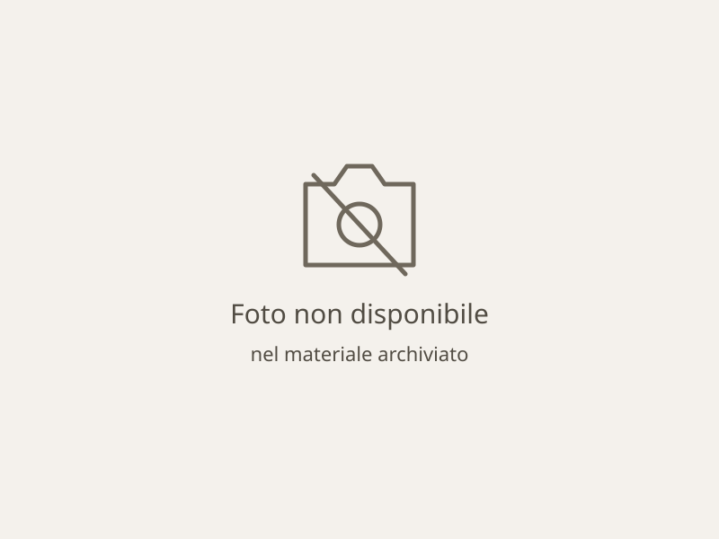

L’associazione Dimensione Animale Bergamo è una ONLUS che si occupa di arginare il fenomeno del randagismo, accudendo i cani abbandonati e senza casa, ed aiutandoli a trovarne una adatta a loro. I nostri volontari operano nel canile di Levate, in provincia di Bergamo, impiegando il proprio tempo libero offrendo aiuto ad animali che molto spesso dedicano la propria vita all’uomo, ma non sempre vengono ricambiati con affetto.
Vuoi conoscere di più su di noi e sulla nostra associazione?

Vuoi adottare un amico peloso?
Offrire una casa ai nostri amici è sicuramente l’aiuto migliore che potresti dare. Adottare un animale non equivale ad acquistare un oggetto, ma ricevere un dono ineguagliabile e di cui prendersi cura: un amico che condividerà con te tutti i momenti della vita in simbiosi, senza mai chiedere niente in cambio. Sei interessato a scoprire quali cani sono in cerca delle cure amorevoli di un nuovo padrone?
Dacci una zampa
Le esperienze di chi ha adottato



Ci sono tanti amici pelosi che sono stati adottati, e tanti altri che hanno una storia che merita di essere raccontata e soprattutto di essere letta. Questi cagnolini vi entreranno nel cuore come sono entrati nel nostro e in quello dei loro padroni.
Non credevo di arrivare ad amare così tanto un cane… ma con Kira è cosi!!! L'adoro! Non riuscirei più a fare a meno di lei!!!! Grazie ancora!
- Marina -
Grazie per avermi dato la gioia di conoscere un cane come la mia Orange, che non è solo un cane per me… lei è una figlia lei, è la mia gioia, il mio amore peloso… insomma lei è tutto!
- Anna -
Inutile dire come un cane abbia cambiato completamente la nostra famiglia. Non potrei immaginare le mie giornate senza di lui adesso.
- Giulia -
Quasi dieci anni fa incontravo la mia piccola Susy. La nostra vita si è trasformata e tutto in positivo
- Donatella -
Cani
adottati
Cani
ospitati
Volontari
Crocchette
mangiate